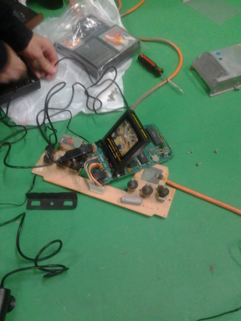
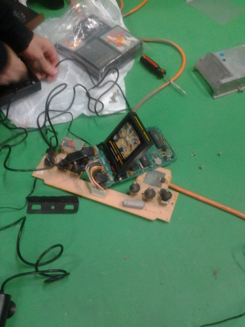
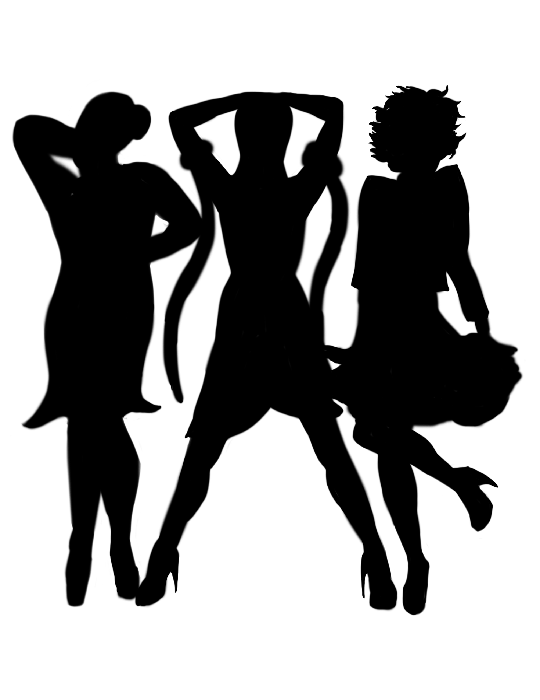
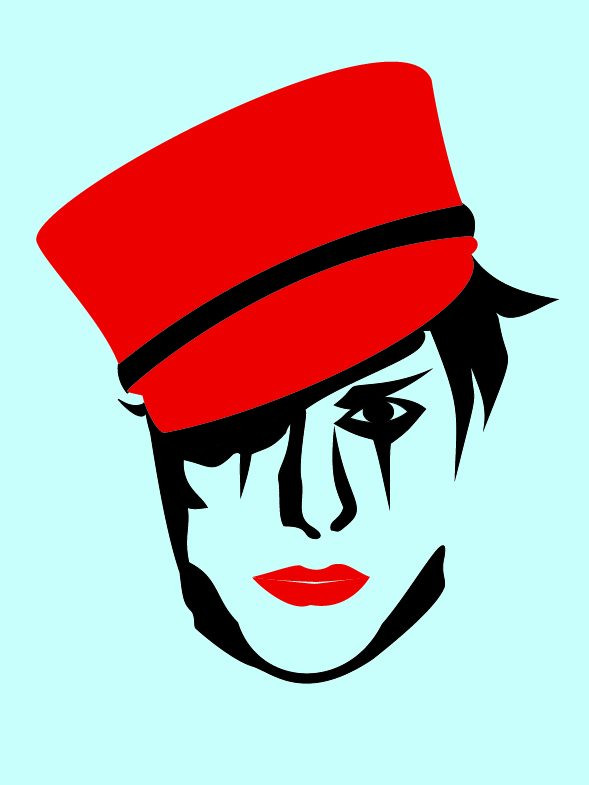
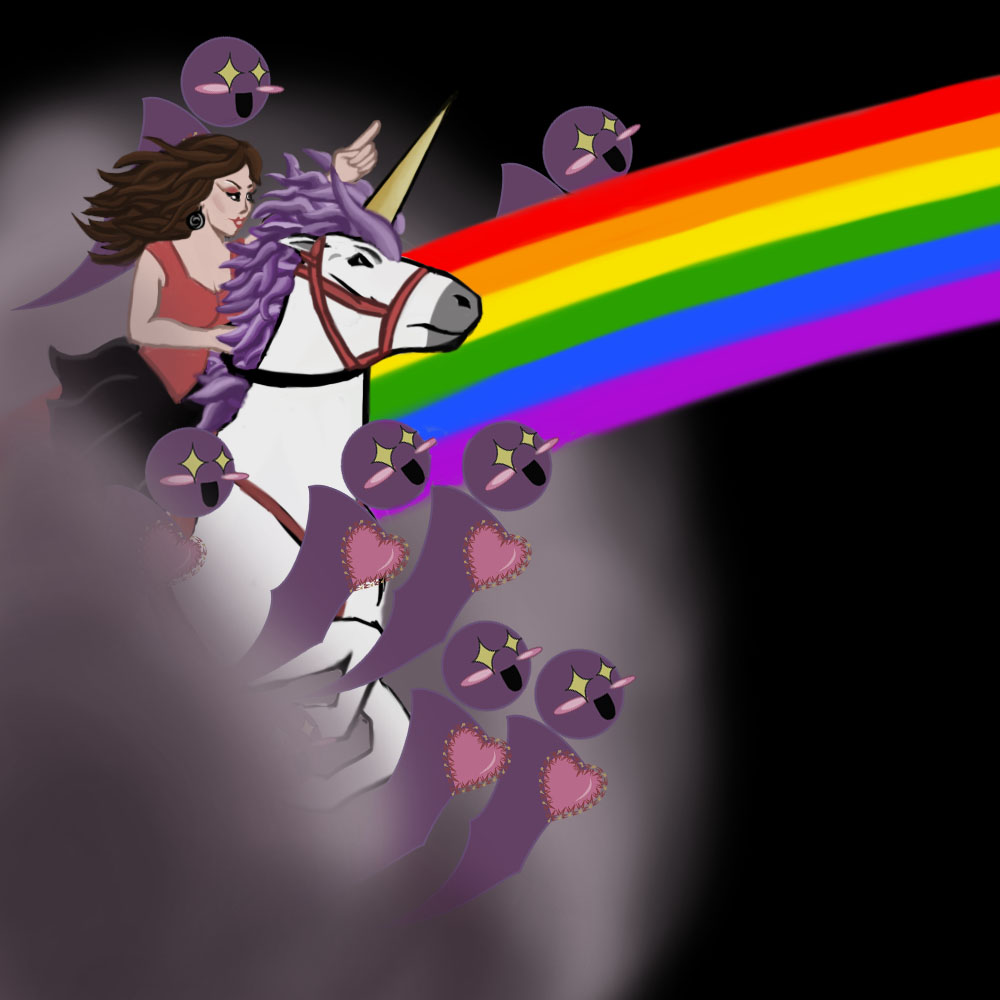
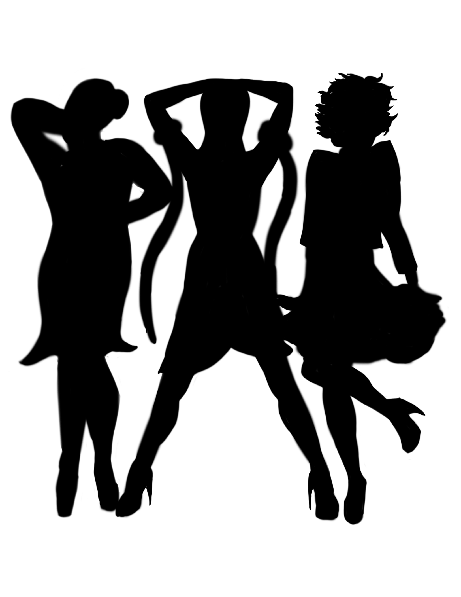
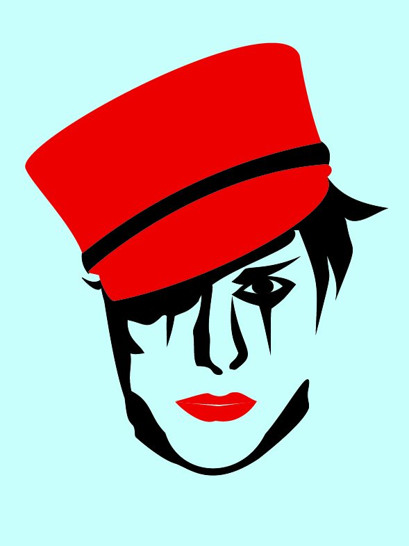
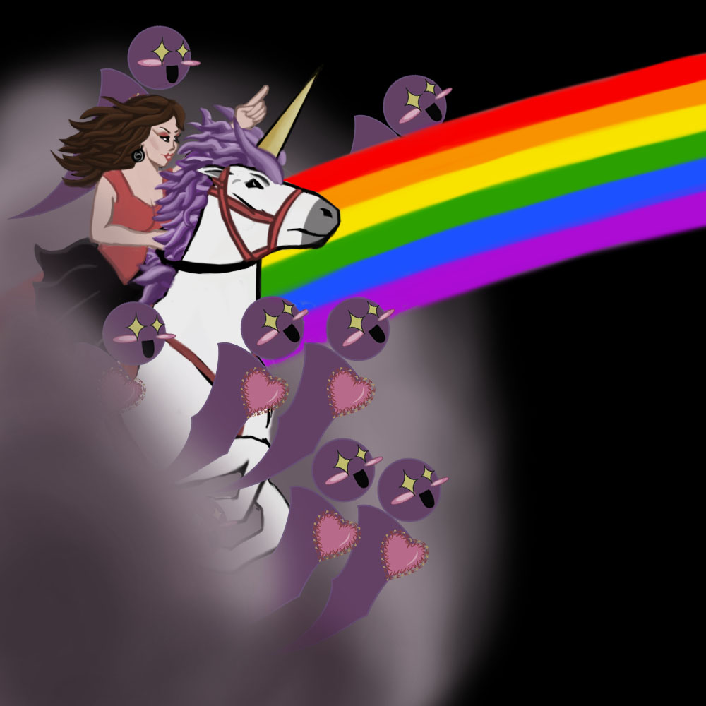

My name is Michael A. DeAnda. I'm originally from El Paso, TX. I received a dual major BS in Interactive Media and Game Development (IMGD) and Humanities and Arts from Worcester Polytechnic Institute (WPI) in Worcester, MA. I earned my MS from WPI in IMGD with a concentration in Games Studies. I am currently a Ph.D. candidate at Illinois Institute of Technology (IIT) in Technical Communication. My major interests, whether academic or in game design, focus on the intersection of LGBTQ people in games.
Research Activities
In my research, I deal with gender and sexual identity in play spaces, fandom, and the games industry.
#1ReasonWhy
Currently, I am part of a team that is focusing on understanding some of the data from the #1ReasonWhy phenomenon on Twitter. We are working on code that will give insight to the data that was collected during the initial three months #1ReasonWhy trended on Twitter. Through this, we hope to illuminate some of the major themes of this movement, and, ultimately, portray some of this data in an accessible form.
Queer Game Structures
I am also entering into the discussion of queer game structures that are gaining traction with the accessibility of game development equipment. Through this research, I argue that normative definitions of games are being weaponized to keep designers who challenge "traditional" ideas of game design from being recognized and included in the games industry. Ultimately, I argue that the format in which people try to dichotomize these designers is incorrect and that the direction of the games industry from the inclusion of these designers will be fruitful as we are able to learn from one another.
Archiving
Viewing video games as cultural artifacts, I am interested in investigating the archival of games. I believe games detail much about our culture in general and our play habits specifically. Technology becoming obsolete and media decay both pose threats to the historic evidence of games. Also, the general mindset of the audience of games also poses a threat to the historic portrayal of games. Because of each of these factors, I find it necessary to be aware of the attempts at preservation, curation and historic presentation of video games as they will one day be reflective of our current society.
a
Production Activities
TRANS-Gression
As part of the requirement for my Master Degree, I designed and built a board game,
TRANS-Gression, designed to facilitate a safe space for people to conceive of more complex
gender expressions and performances. This game challenges players to understand gender
as an expression through acting, dancing and dressing up.
Purchase your copy!
Not Your Ordinary Pizza
The concept behind this game was to create a tower defense game that compelled users to
place and upgrade both enemy and defense generators. My main contribution to this project was
the evil dough man. I also modeled and textured the level and many of the appliances used for the towers.
The other members on this creative project were Kyle Horn, Michael Metzler and Brian Seney.
Play Not Your Ordinary Pizza!
E-Xist
Back during my undergraduate years, I worked on a team in which we developed a
comic book that explored existentialism and queerness. Our focus behind E-Xist was to
translate existentialism through narrative into a comic book in order to make it accessible
to readers.
Read E-Xist.
In Production
Currently, I am in the process of developing a few games. In my own time, I am working on a video game that focuses on the vanishing ball scene of drag culture. In this game, players uncover the often cut-throat experience embedded into the rivalry of the drag ball. In special moments of this game, I plan on including part of the community building that is unique to drag culture in that it provides an alternative family through which one can grow and mentor others.
Inspired by Safe Spaces Training during LGBTQ History Month at IIT, I began designing a game which provides the context for players to reflect on the difficulties of being "in the closet." This game challenges players to police their own behavior and vocabulary.
The other game I am developing gives players the ability to impact the field on which they play. In this table-top game, I want to combine chaos and a the feeling of wanting to screw over the other players in a race to the finish.
a
Check out my work and some of my interests
 


 





Contact Me:
Twitter: @MichaelsLore